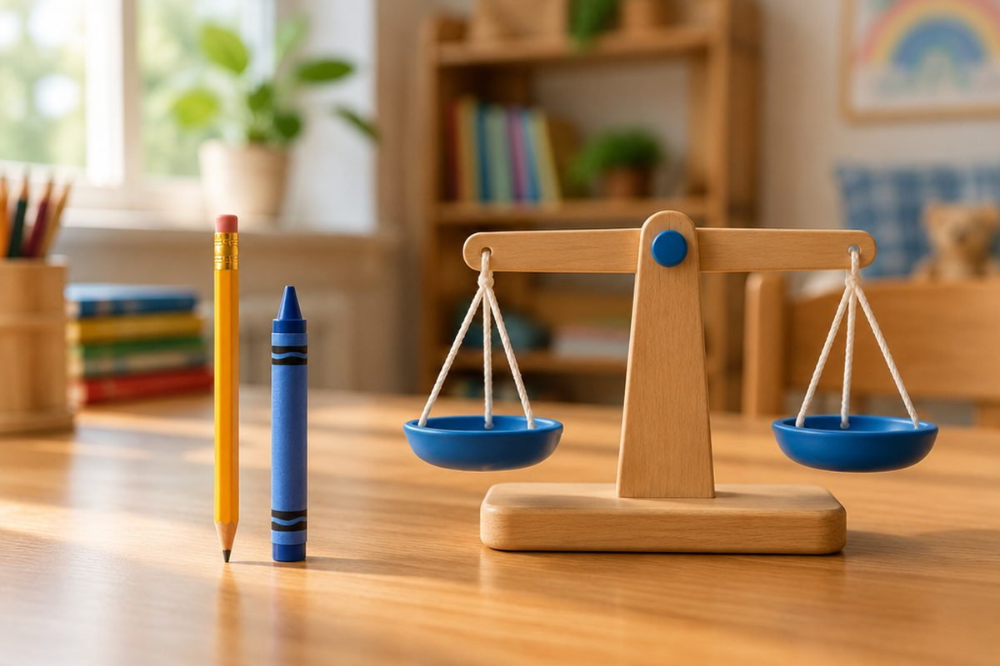

전체 단원 › 1학년 1학기 › 수학 › 비교하기(길이·무게·넓이)
누가 더 길고, 무겁고, 넓을까?

연필과 크레파스, 어느 것이 더 길까요? 수박과 사과는 어느 것이 더 무거울까요? 오늘은 비교하는 방법을 배워요.
길이 비교: 끝을 맞춰요
길이를 비교할 때는 한쪽 끝을 맞춰요.
다른 쪽 끝이 더 나온 것이 더 길어요.
키는 발끝을 맞추고 서서 비교해요.
연필과 크레파스의 왼쪽 끝을 맞추면 연필이 더 나와요 → 연필이 더 길어요.
무게 비교: 들어 보고 달아 봐요
두 손에 하나씩 들어 보면 무게를 느낄 수 있어요.
시소나 양팔 저울에서는 아래로 내려간 쪽이 더 무거워요.
수박과 사과를 양팔 저울에 올리면 수박 쪽이 내려가요 → 수박이 더 무거워요.
넓이 비교: 겹쳐 봐요
넓이는 겹쳐 보면 알 수 있어요.
겹쳤을 때 남는 부분이 있는 쪽이 더 넓어요.
다른 쪽에 모두 가려져서 남는 부분이 없는 쪽이 더 좁아요. 둘 다 남지 않으면 넓이가 같아요.
공책 위에 우표를 올리면 공책이 많이 남아요 → 공책이 더 넓어요.
이렇게 풀어요: 클립으로 재어 비교하기
끝을 맞추기 어려우면 같은 물건으로 재어요.
클립 몇 개만큼인지 세어 봐요.
클립 수가 많을수록 더 길어요.
① 줄 가: 클립 5개, 줄 나: 클립 8개 ② 8이 5보다 커요. ③ 줄 나가 더 길어요. 8 − 5 = 3이니 클립 3개만큼 더 길어요.
핵심 낱말
- 길다·짧다
- 길이를 비교할 때 쓰는 말
- 무겁다·가볍다
- 무게를 비교할 때 쓰는 말
- 넓다·좁다
- 넓이를 비교할 때 쓰는 말
- 가장
- 여러 개 중에서 제일이라는 뜻(가장 길다, 가장 무겁다)
한 줄 정리
- 길이는 한쪽 끝을 맞춰 비교해요.
- 무게는 들어 보거나 저울에서 내려간 쪽이 더 무거워요.
- 넓이는 겹쳐서 남는 쪽이 더 넓어요.
학교 교육과정 연결
- [2수03-06] 구체물의 길이, 들이, 무게, 넓이를 비교하여 각각 ‘길다, 짧다’, ‘많다, 적다’, ‘무겁다, 가볍다’, ‘넓다, 좁다’ 등을 구별하여 말할 수 있다.